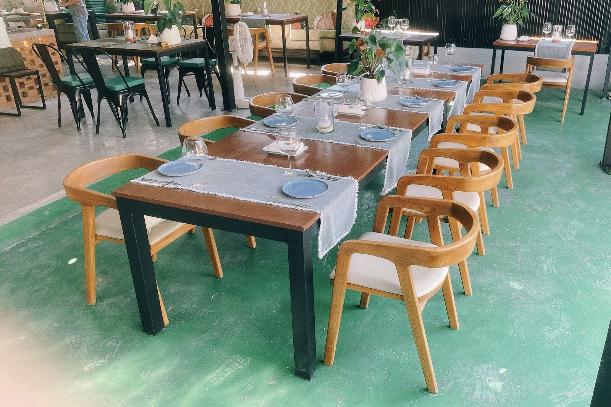
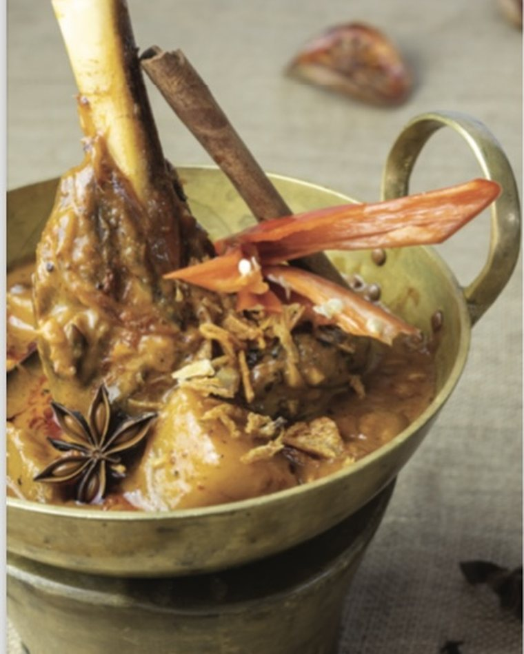
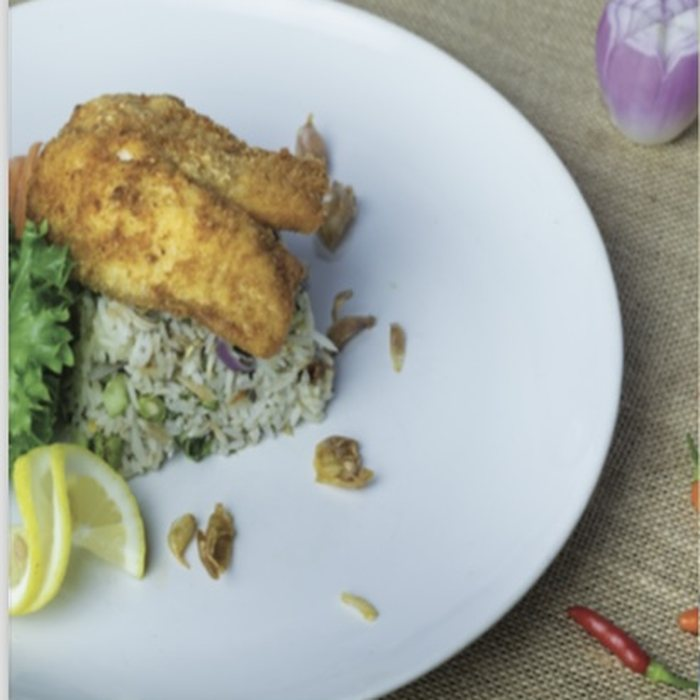
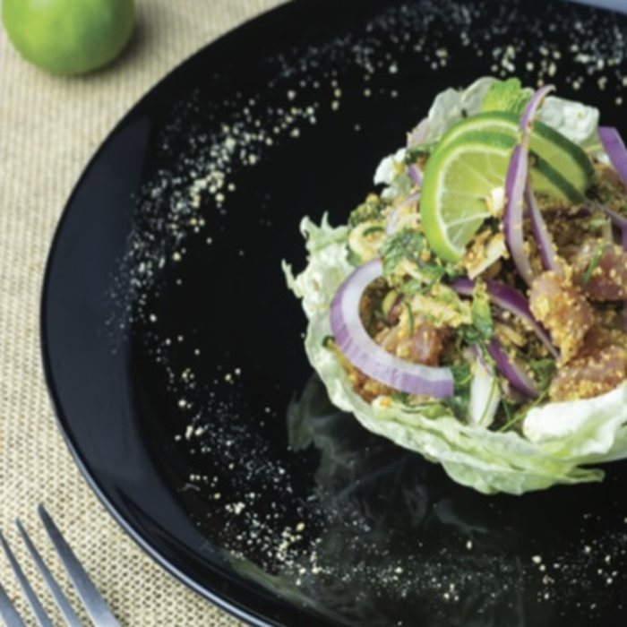

from four regions of Thailand
An airy dining room in Bophut. Curries, salads and slow-cooked signatures, as mild or as spicy as you like.
Friday to Wednesday 11:30 to 22:00Closed on Thursdays4.9 on Google, 650 reviews (Nov 2026)



Khao Soy Tempura, 219: northern egg noodles in coconut curry with prawn tempura, chilli and shallots.
we look forward to seeing you
105/218 Bo Put, Koh Samui 84320, west of Fisherman's Village. Credit cards and tap to pay accepted. Free parking.